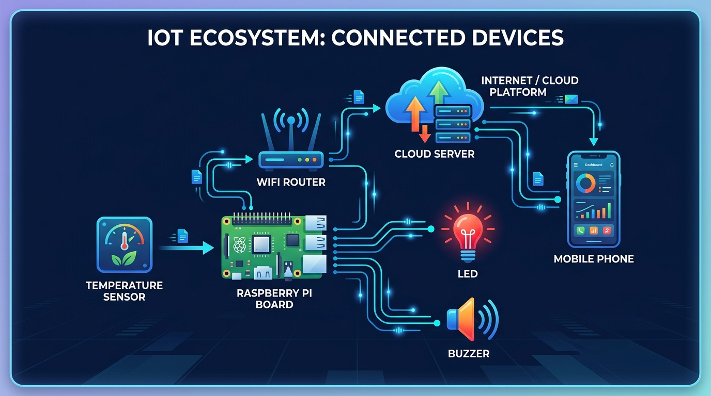
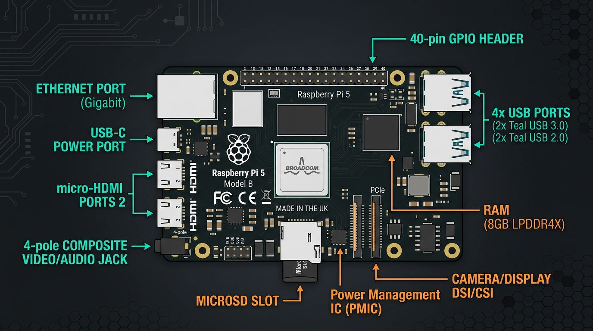
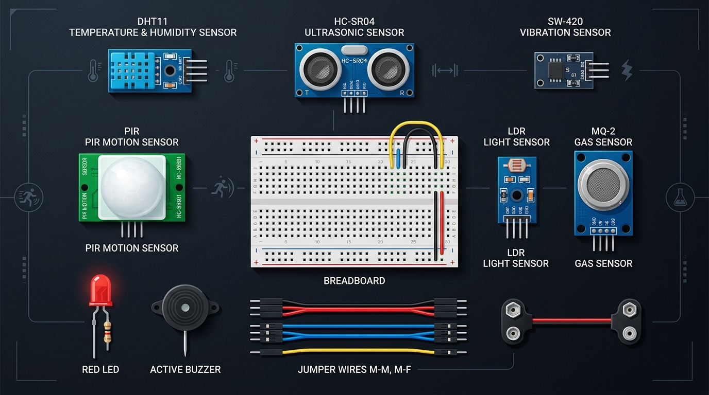

Internet of Things (IoT) Unit 4 Complete Student Textbook
Welcome to your definitive learning companion. This interactive textbook is crafted for students to understand physical computing, master the Raspberry Pi Single Board Computer, program hardware interfaces using Python, build five hands-on real-world sensor projects, and log persistent telemetry into a MySQL database.
12
Chapters
5
Hands-On Labs
100%
Tested Code
20
Exam Questions
Chapter 01
IoT Physical Devices & Endpoints
What You Will Learn
Define the Internet of Things (IoT) clearly with real-world examples.
Distinguish between physical IoT devices and network endpoints.
Explain Producer vs Consumer endpoints.
Trace the 4-Stage IoT Data Pipeline (SPCA Model).
1.1 What is the Internet of Things?
The Internet of Things (IoT) is a vast global network of physical objects ("things") embedded with sensors, processing chips, software, and communication hardware. These devices collect physical information from their surroundings, process it, and communicate with other machines and cloud servers over the internet — without requiring constant human input.
Unlike traditional personal computers where humans type on keyboards or click a mouse, an IoT device interacts directly with the physical world: measuring room temperature, detecting vibration in a bridge, sensing obstacle distances, and switching electrical appliances on or off autonomously.

Figure 1.1: The Connected IoT Ecosystem — Sensing layers, edge gateways (Raspberry Pi), wireless networks, and cloud analytics.
1.2 IoT Physical Devices vs Endpoints
📡
IoT Physical Device
An actual electronic hardware unit equipped with physical components (sensors, microcontrollers, antennas, power supplies). It measures physical variables (temperature, velocity, sound) and transforms them into electrical signals.
📍
IoT Endpoint
The terminal node positioned at the outermost boundary ("the edge") of an IoT network. It represents the point where computation directly interfaces with physical reality. An endpoint is either a producer of data, a consumer of commands, or both.
Types of Endpoints:
Producer Endpoints: Nodes that capture environmental telemetry and transmit it upstream (e.g., weather station sensor node, soil moisture probe in smart farming).
Consumer Endpoints: Nodes that receive instructions over the network and perform physical actuation (e.g., smart water valves, automated streetlights, motor relays).
Bi-directional Endpoints: Nodes that sense, compute locally, and actuate based on incoming commands (e.g., an intelligent thermostat running on Raspberry Pi).
1.3 The 4-Stage IoT Data Pipeline (SPCA Model)
Every IoT project in this textbook follows the four-step data cycle:
The Raspberry Pi 4 CPU reads pin voltages, computes mathematical formulas, and evaluates safety thresholds.
3. COMMUNICATE (Network)
The on-chip Wi-Fi transceiver transmits telemetry to local databases (MySQL) or cloud brokers via TCP/IP.
4. ACT (Physical Response)
Actuators respond physically (LEDs flash warnings, buzzers sound, or alert emails are dispatched).
Chapter 02
The 7 Building Blocks of an IoT Device
What You Will Learn
Identify all 7 foundational building blocks of an IoT architecture.
Understand the role of Power, Processing, Memory, Sensors, Actuators, Communication, and Software.
Analyze Digital vs Analog sensors and the need for external ADCs on Raspberry Pi.
Whether analyzing a fitness smart band, an industrial factory monitor, or a home automation hub, all IoT physical devices are constructed from the same **seven fundamental building blocks**:
⚡ 1. Power Supply Unit (PSU)
Provides regulated electrical energy. The Raspberry Pi 4 requires a stable 5V / 3A (15W) USB-C power source. Insufficient power leads to random system resets and SD card corruption.
🧠 2. Processing Unit
The computation brain. Microcontrollers (Arduino Uno) run a single program on bare metal; Microprocessors (Raspberry Pi) run a full multi-user Linux OS with multi-tasking capabilities.
💾 3. Memory & Storage
Volatile RAM (4GB LPDDR4 on Pi 4) runs active software; Non-volatile storage (MicroSD card or USB SSD) hosts the Linux OS, Python scripts, and persistent MySQL database records.
🌡️ 4. Sensing Layer
Transducers converting physical forces into electrical signals. Digital sensors (DHT11, SW-420) connect directly to GPIO; analog sensors require an external ADC chip (MCP3008).
⚙️ 5. Actuation Layer
Translates low-power digital signals from GPIO pins into real-world physical changes: lighting LEDs, sounding buzzers, or switching high-voltage AC loads via opto-isolated 5V relays.
📶 6. Communication Module
Enables network connectivity: Built-in 802.11ac Wi-Fi and Bluetooth 5.0 BLE on Raspberry Pi, plus Ethernet, Zigbee, LoRa, or 4G LTE cellular interfaces.
💻 7. Software & Application Layer
The software stack orchestrates the entire device: Raspberry Pi OS (Debian Linux kernel), hardware abstraction drivers (RPi.GPIO, gpiozero), relational database engines (MariaDB/MySQL), and high-level application scripts written in Python 3.
2.2 Digital vs Analog Sensors: The Raspberry Pi ADC Factor
⚠️
Important Student Fact: Raspberry Pi Has NO Built-in Analog Pins!
Unlike Arduino Uno (which includes 6 built-in 10-bit analog inputs labeled A0-A5), all 26 GPIO pins on a Raspberry Pi are purely digital (reading only 0V or 3.3V). To connect analog sensors (like an LDR light sensor or potentiometer), students must interface an external ADC (Analog-to-Digital Converter) such as the MCP3008 via the SPI bus.
Chapter 03
Raspberry Pi Hardware Architecture
What You Will Learn
Understand the architecture of the Broadcom BCM2711 System-on-Chip (SoC).
Compare Microcontrollers (Arduino) vs Single Board Computers (Raspberry Pi).
Examine all peripheral ports, power specifications, and thermal considerations.

Figure 3.1: Anatomy of the Raspberry Pi 4 Model B — Quad-core ARM Cortex-A72 CPU, dual Micro-HDMI ports, USB 3.0, Gigabit Ethernet, and 40-pin GPIO header.
3.1 Microcontroller vs Single Board Computer (SBC)
Feature
Arduino Uno (Microcontroller)
Raspberry Pi 4B (Single Board Computer)
Processor
8-bit ATmega328P @ 16 MHz
64-bit Quad-Core ARM Cortex-A72 @ 1.5 GHz
Operating System
None (Executes compiled C/C++ firmware)
Full Preemptive Linux OS (Raspberry Pi OS)
RAM
2 KB SRAM
2 GB, 4 GB, or 8 GB LPDDR4
Storage
32 KB On-Chip Flash Memory
16 GB to 256 GB MicroSD Card / USB SSD
Analog Inputs
6 Built-in 10-bit ADC Channels
0 Built-in (Requires external ADC chip)
Networking
None (Requires external shield/module)
Built-in Gigabit Ethernet, Dual-Band Wi-Fi, Bluetooth 5.0
Best For
Real-time motor timing, battery sensors
Edge computing, database servers, web gateways
Chapter 04
Linux on Raspberry Pi & CLI Essentials
What You Will Learn
Understand why Linux is the industry standard for IoT deployments.
Master Headless SSH configuration without external screens.
Execute fundamental Linux terminal commands for file, system, and network administration.
Automate Python IoT scripts using the Linux Cron scheduler.
4.1 Headless Setup via SSH
In commercial and industrial IoT deployments, Raspberry Pi boards are mounted inside electrical enclosures without monitors or keyboards attached. This mode of operation is called Headless Mode. Developers connect over the local network using SSH (Secure Shell).
Terminal — Connect via SSH
# Connect to Raspberry Pi using mDNS hostname
ssh pi@raspberrypi.local
# Or connect directly via assigned IPv4 address
ssh pi@192.168.1.105
# Enter password when prompted (default: raspberry or your custom password)
4.2 Top 10 Essential Linux Commands for IoT Students
Command
Description
Student Example
pwd
Print Working Directory (shows current path)
pwd $\rightarrow$ /home/pi/iot_lab
ls -la
List all files with permissions and sizes
ls -la
cd <dir>
Change directory
cd /home/pi/projects
nano <file>
Simple terminal text editor
nano sensor.py (Save: Ctrl+O, Exit: Ctrl+X)
sudo apt update
Refresh package repositories list
sudo apt update && sudo apt upgrade -y
pip3 install
Install Python IoT libraries
pip3 install RPi.GPIO mysql-connector-python
htop
Interactive real-time CPU & RAM monitor
htop (Press 'q' to quit)
vcgencmd
Measure CPU silicon temperature
vcgencmd measure_temp $\rightarrow$ temp=48.2'C
systemctl
Manage system background daemon services
sudo systemctl status mariadb
crontab -e
Edit automated scheduled tasks
Add: @reboot python3 /home/pi/script.py &
Chapter 05
Raspberry Pi Hardware Interfaces
What You Will Learn
Memorize the 40-pin GPIO header layout and power distribution pins.
Understand the 3.3V logic level safety constraint and how to prevent pin destruction.
Master the differences between GPIO, PWM, I2C, SPI, and UART interfaces.
🚨
CRITICAL RULE: The 3.3V Logic Level Warning!
Raspberry Pi GPIO input pins operate strictly at 3.3V maximum. Applying a 5V signal directly from a sensor (such as the ECHO pin of the HC-SR04 ultrasonic sensor) will permanently burn out the GPIO pin and destroy the internal Broadcom processor chip. Always use a resistor voltage divider or logic level converter!
5.1 Overview of the 5 Hardware Buses
1. Digital GPIO (Input/Output)
Each pin can be set as an INPUT (reads 3.3V as HIGH / True, 0V as LOW / False) or OUTPUT (supplies 3.3V or 0V). Max current: 16mA per individual pin.
2. PWM (Pulse Width Modulation)
Simulates variable analog voltages by pulsing digital signals rapidly between ON and OFF. Used for dimming LEDs, setting motor speeds, and positioning servo motors (50 Hz).
3. I2C (Inter-Integrated Circuit)
2-wire multi-device serial bus: SDA (Data, GPIO 2) and SCL (Clock, GPIO 3). Connects up to 127 devices on the same 2 wires using unique 7-bit addresses (e.g., OLED displays, BME280).
4. SPI (Serial Peripheral Interface)
4-wire high-speed synchronous bus: MOSI, MISO, SCLK, and CE. Operates at speeds exceeding 10-32 MHz for fast ADC chips (MCP3008) and RFID readers.
Chapter 06
Python Programming with Raspberry Pi
What You Will Learn
Configure the RPi.GPIO library using Broadcom (BCM) pin numbering.
Control digital outputs (LEDs, relays, buzzers).
Configure internal Pull-Up and Pull-Down resistors to stabilize floating pins.
Implement hardware edge detection interrupts for zero-CPU event monitoring.
6.1 Pull-Up vs Pull-Down Resistors (Eliminating Floating Pins)
When a wire or switch is connected to an input pin, the pin enters an undefined floating state when the switch is open, picking up electrostatic interference and fluctuating randomly between 0 and 1. We solve this using software internal resistors:
python — internal_resistors.py
import RPi.GPIO as GPIO
GPIO.setmode(GPIO.BCM)
# PULL-UP: Default state is 3.3V (HIGH). When button connects pin to GND, it reads LOW (0V).
GPIO.setup(18, GPIO.IN, pull_up_down=GPIO.PUD_UP)
# PULL-DOWN: Default state is 0V (LOW). When button connects pin to 3.3V, it reads HIGH (3.3V).
GPIO.setup(18, GPIO.IN, pull_up_down=GPIO.PUD_DOWN)
6.2 Hardware Interrupts vs Polling
❌ Polling (Bad Approach)
A while True: loop repeatedly checks GPIO.input() thousands of times per second. This consumes 100% of a CPU core, drains battery power, and generates excess heat.
✅ Hardware Interrupts (Professional)
The Linux kernel monitors pin voltage changes. When a transition occurs, it calls a registered Python callback function immediately. CPU usage remains at 0% idle!
Lab Project 01
Measure Distance with HC-SR04 & LED Alarm
Project Objectives
Understand the physics of Sonar echo ranging and acoustic pulse timing.
Construct a 5V-to-3.3V resistor voltage divider to safeguard the Raspberry Pi.
Write a Python script that calculates obstacle distance and dynamically adjusts LED blink rate.

Figure 7.1: Hardware Components Kit — HC-SR04 Ultrasonic sensor, SW-420 Vibration module, DHT11 Temperature sensor, and indicator LEDs.
7.1 Physics & Distance Formula
The HC-SR04 emits an 8-cycle ultrasonic acoustic burst at $40\text{ kHz}$ upon receiving a $10\mu\text{s}$ trigger pulse. The wave travels through the air at the speed of sound ($343\text{ m/s} = 34,300\text{ cm/s}$), strikes an obstacle, and bounces back to the receiver:
📐
The Mathematical Equation:
$$\text{One-way Distance (cm)} = \frac{\text{Echo Pulse Duration (seconds)} \times 34,300\text{ cm/s}}{2}$$
We divide by 2 because the acoustic wave travels to the obstacle and returns back (round trip).
7.2 Wiring & Voltage Divider Circuit
HC-SR04 Sensor Pin
Raspberry Pi Connection
Circuit Notes
VCC
Pin 2 (5V Power)
Requires 5V to drive acoustic transducers
GND
Pin 6 (Ground)
Common ground reference
TRIG
GPIO 23 (Pin 16)
Direct connection (Pi supplies 3.3V trigger pulse)
ECHO
GPIO 24 (Pin 18) via Voltage Divider
1kΩ resistor from ECHO to GPIO 24, 2kΩ resistor from GPIO 24 to GND ($5\text{V} \rightarrow 3.33\text{V}$)
Understand the mechanical construction and operation of the SW-420 spring-mass switch.
Connect the sensor module to Raspberry Pi with an alarm buzzer/LED.
Implement an interrupt-driven Python alert engine with anti-chatter cooldown debouncing.
8.1 Working Principle
The SW-420 module houses a tiny conductive spring suspended inside an insulated metal tube (Normally Closed). When stationary, the spring touches the outer contact terminal, completing the circuit. The onboard LM393 voltage comparator outputs logic **LOW (0V)**. When mechanical vibration, shock, or tampering occurs, the spring momentarily disconnects, driving the digital output **HIGH (3.3V)**.
8.2 Complete Python Code (Interrupt Driven)
python — vibration_detector.py
import RPi.GPIO as GPIO
import time
from datetime import datetime
VIB_PIN = 4
ALARM_PIN = 27
GPIO.setmode(GPIO.BCM)
GPIO.setup(VIB_PIN, GPIO.IN, pull_up_down=GPIO.PUD_DOWN)
GPIO.setup(ALARM_PIN, GPIO.OUT)
GPIO.output(ALARM_PIN, GPIO.LOW)
vibration_events = 0
last_alarm_time = 0
COOLDOWN_PERIOD = 1.5# Seconds to suppress duplicate triggersdefvibration_handler(channel):
global vibration_events, last_alarm_time
now = time.time()
if (now - last_alarm_time) >= COOLDOWN_PERIOD:
vibration_events += 1
last_alarm_time = now
ts = datetime.now().strftime("%Y-%m-%d %H:%M:%S")
print(f"[ALERT #{vibration_events:03d}] Shock/Tamper detected at {ts}!")
# Pulse alarm buzzerfor _ inrange(3):
GPIO.output(ALARM_PIN, GPIO.HIGH); time.sleep(0.1)
GPIO.output(ALARM_PIN, GPIO.LOW); time.sleep(0.1)
# Register hardware rising-edge interrupt
GPIO.add_event_detect(VIB_PIN, GPIO.RISING, callback=vibration_handler, bouncetime=100)
try:
print("Vibration Security System Armed. CPU idling at 0%...")
whileTrue:
time.sleep(1)
exceptKeyboardInterrupt:
print("\nSystem disarmed.")
finally:
GPIO.output(ALARM_PIN, GPIO.LOW)
GPIO.cleanup()
Lab Project 03
Connect with Available Wi-Fi
Project Objectives
Scan surrounding Wi-Fi Access Points via Linux terminal commands.
Configure automated multi-network failover in wpa_supplicant.conf.
Write a Python script to verify IP assignment, signal strength, and internet status.
9.1 Multi-SSID Configuration
Edit the configuration file to store multiple network credentials with priorities:
Prepare for practical lab viva voce questions asked by external examiners.
Test conceptual understanding through interactive multiple-choice quiz questions.
12.1 Top 10 Viva Voce Questions & Model Answers
Q1: Why must we never connect a 5V sensor signal directly to a Raspberry Pi GPIO pin?
Model Answer: Raspberry Pi Broadcom SoCs operate strictly on a 3.3V logic level. Applying 5V directly to a GPIO input pin exceeds the silicon dielectric breakdown limit, causing electrical latch-up and permanently destroying the internal gate oxides and protection diodes. A voltage divider (1kΩ + 2kΩ) or bidirectional logic level converter must be used.
Q2: What is the difference between BCM and BOARD pin numbering in Python?
Model Answer:GPIO.BOARD refers to the physical sequential pin numbers on the 40-pin header (Pins 1 through 40). GPIO.BCM refers to the Broadcom SoC internal channel numbers (e.g., GPIO 4, GPIO 17). BCM is preferred in industry because it aligns directly with hardware datasheets and Linux device trees.
Q3: Why is interrupt-driven I/O superior to polling for sensor monitoring?
Model Answer: Polling runs an infinite while True loop that repeatedly queries pin state, wasting 100% of a CPU core and risking missing short transient pulses. Interrupt-driven event detection (GPIO.add_event_detect) allows the CPU to sleep at 0% usage; the Linux kernel dispatches the Python callback function instantly when a voltage edge transition occurs.
Q4: How does the HC-SR04 ultrasonic sensor calculate distance?
Model Answer: The sensor transmits an ultrasonic burst at 40 kHz upon receiving a 10µs trigger pulse. The wave travels through the air at the speed of sound (343 m/s = 34,300 cm/s), strikes an obstacle, and bounces back. The sensor outputs a HIGH pulse on the ECHO pin equal to the sound wave's round-trip time ($t$). Distance is calculated as:
$$\text{Distance} = \frac{t \times 34,300}{2}\text{ cm}$$
Q5: Why is MySQL/MariaDB preferred over flat CSV files for IoT telemetry?
Model Answer: MySQL provides ACID transaction safety, prevents file-locking corruption during simultaneous read/write operations, supports structured indexing for high-speed searches across millions of rows, and enables aggregate analytics (e.g., AVG(), MAX(), MIN()) directly in the database engine.
12.2 Interactive Self-Assessment Quiz
Click on the correct answer to test your knowledge:
1. What is the maximum safe input voltage for a Raspberry Pi 4 GPIO pin?
A) 5.0 Volts
B) 3.3 Volts
C) 12.0 Volts
D) 1.8 Volts
2. Which protocol uses only two wires (SDA and SCL) to connect up to 127 devices?
A) SPI
B) UART
C) I2C
D) PWM
3. How many native analog-to-digital converter (ADC) channels are built into the Raspberry Pi 4 SoC?
A) 0 Channels (Requires external ADC like MCP3008)